Simulation Results
As we said in the simulation page, we wanted to explore the changing in phase of liquid crystals undergoing a cooling process.
We did this by implementing the Monte Carlo method with the Gay-Berne potential.
2D Simulation
2D Simulation - first try
We simulated 10X10 particles in two dimensions.
We used an effective temperature defined as:
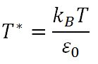
Where T is the temperature of the system.
Beginning with 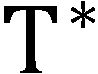 = 3.0 and  = 0.5,
= 0.5,  = 1.0,
= 1.0,
 = 3.0,
= 3.0,  = 5.0,
= 5.0,  = 1.0,
= 1.0,  = 3.0.
= 3.0.
The temperature change at each cooling step was 0.05.
The model we used was: 2d_large
To run this simulation in the program, use the command:
./run.sh 2d_large
We started the cooling process from a random initial state.
At each step (temperature) we allowed at most 100,000 Metropolis steps and then continued cooling.
As we can see here in our output we get order out of the initial mess:

At the beginning we had an isotropic state:
Isotropic phase at T*=3.0
| 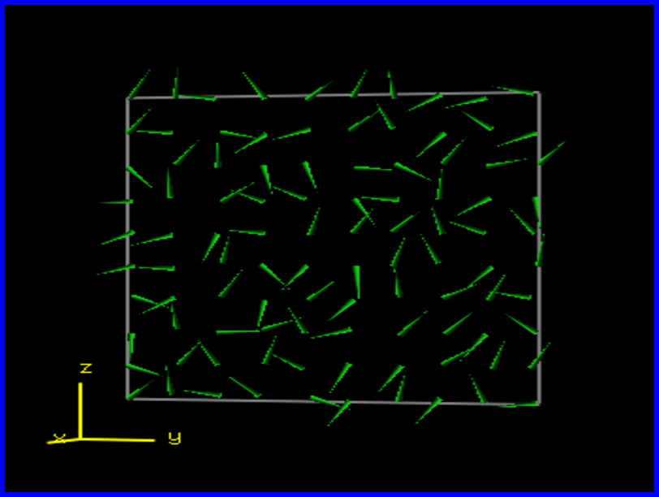 |
We can see the change of phase at around = 2.5, where it changed from Nematic Liquid Crystal to Smectic:
| 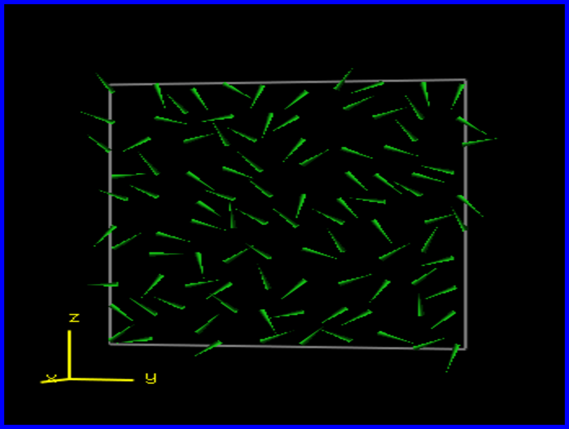 |
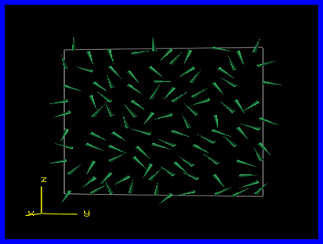 |
| Nematic Phase |
Smectic Phase |
Then there is another change of phase at around = 1.8 , where it changed to a different type of Smectic Liquid Crystal:
| 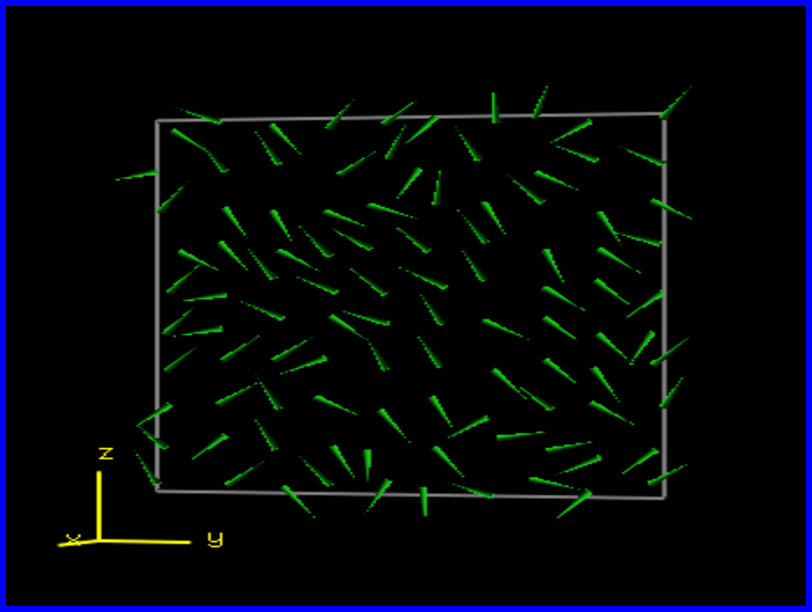 |
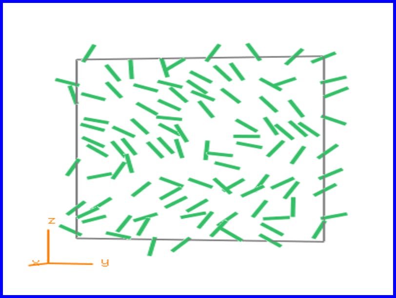 |
| Smectic A Phase |
Smectic B Phase |
Afterwards there is a fast quench at around = 0.5:
 |
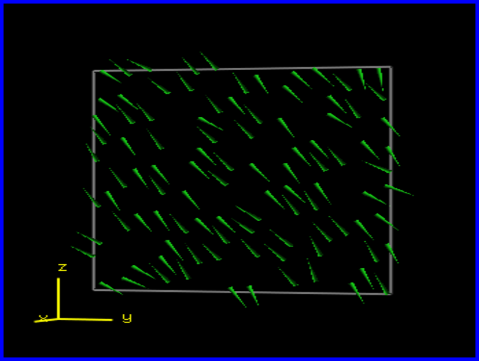 |
| Smectic Phase |
Almost Solid State |
You can read more about phase changes in Liquid Crystals in our explanation page
The full statistics with the charts and animations can be found here.
More explanations on how to use the statistics can be found in the manual page.
Information on how to configure AViz to show the images for this simulation can be found here
2D Simulation - Second try
We now simulated a 10X10 particle system in two dimensions, with the same system parameters.
The only changes in the simulation were that the initial temperature used was = 4.0, and the temperature
change at each cooling step was 0.01 between = 1.5 to = 0.01, so we get
a slower cooling of the system in those critical temperatures.
With these changes in the cooling process, we will be able to see more changes in phase.
The model we used was: 2d_large_slow_cool
To run this simulation in the program, use the command:
./run.sh 2d_large_slow_cool
At the beginning we had an isotropic state:
In this simulation we can actually see the change of phase at around = 3.5, where it changed into a Nematic Liquid Crystal:
| 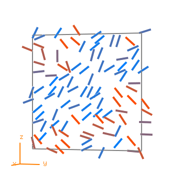 |
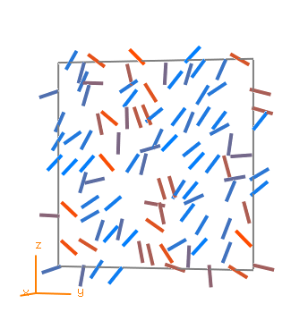 |
| Almost Isotropic Phase |
Nematic Phase |
We can see the change of phase at around = 2.5 from Nematic to Smectic A Liquid Crystal:
 |
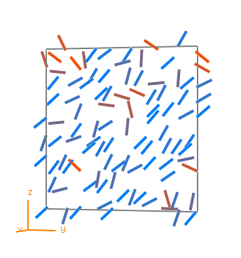 |
| Nematic Phase |
Smectic A Phase |
Then there is another change of phase at around = 1.5, where it changed from Smectic A to Smectic B Liquid Crystal:
| 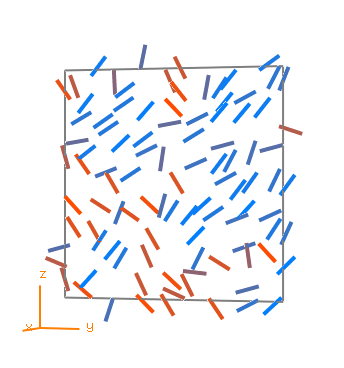 |
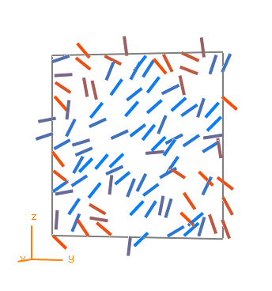 |
| Smectic A Phase |
Smectic B Phase |
Then there is a change of phase at around = 1.0, where it changed from Smectic B to Smectic C Liquid Crystal:
| 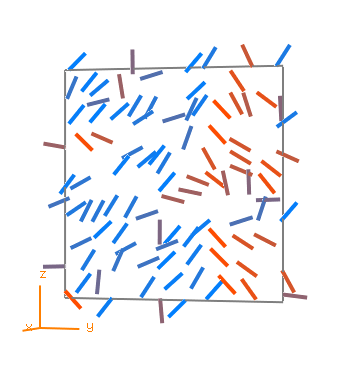 |
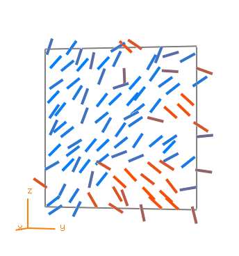 |
| Smectic B Phase |
Smectic C Phase |
Finally there is a fast quench at around = 0.38:
| 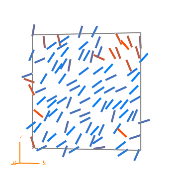 |
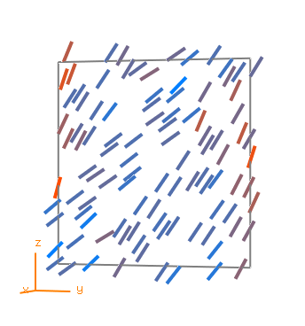 |
| Smectic C Phase |
Almost Solid State |
You can read more about phase changes in Liquid Crystals in our explanation page
The full statistics with the charts and animations can be found here.
More explanations on how to use the statistics can be found in the manual page.
Information on how to configure AViz to show the images for this simulation can be found here
2D Simulation - Conclusions
Most of the analysis was done using the statistics page
(Explanations for how to use it can be found here).
First of all, in both simulations the phase changes are visible to some extent.
In the slow cooling process more phase changes can be seen, and they are more prominent as well.
The fast quench happens in both cases, and is an indication that even the slow
cooling isn't slow enough, and solidification occurs at the end.
Secondly, when viewing the Energy vs. Temperature graph for both processes, it
can be seen that they overlap in most places, and the general trend is the
same.
While the faster cooling is more erratic, both systems still follow the same
path, and both start loosing energy rapidly at almost the same point.
This can be seen clearly in the graph itself:
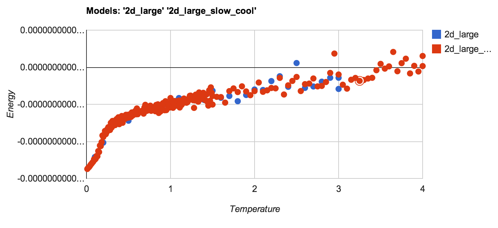
Finally, from viewing the timeline of both systems it can be seen that we
reach a lower energy at the final temperature in the slower cooling system.
This implies that, as in real life physics, that with slower cooling and
carefull equalibiration of the system at each temperature, we can achieve a
lower total system energy.
This of course makes sense both physically and in the Monte Carlo simulation
itself, and can be seen in the following graph:
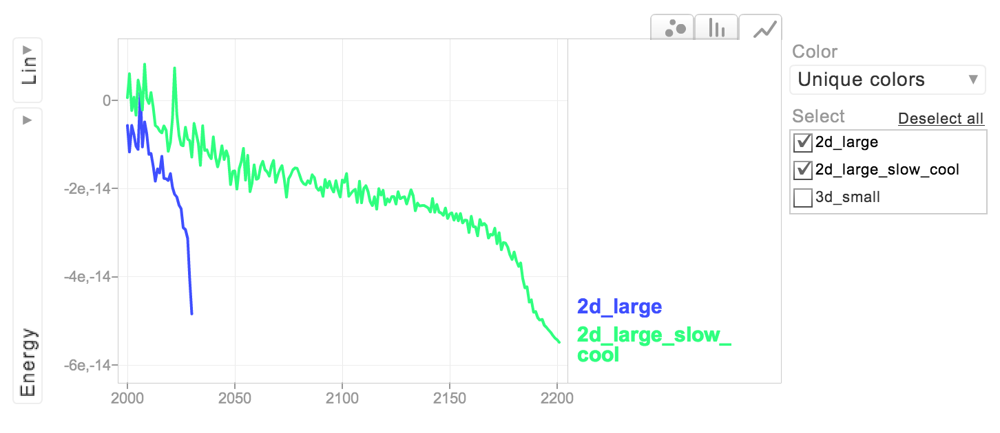
Most phase changes are visible in these two simulations, and the Monte Carlo
method demonstrates most of the physics involved.
This is especially evident in the changes noted above between slow and fast
cooling and their effects on the system.
3D Simulation
Now we simulated a 5X5X5 particle system in 3 dimensions.
We used the same parameters as in 2D except for adding another dimension with Periodic Boundary Conditions.
The model we used was: 3d_small
To run this simulation in the program, use the command:
./run.sh 3d_small
At the beginning we had an isotropic state:
Then we got a change of phase at around = 2.4, where it changed from Nematic Liquid Crystal to Smectic:
| 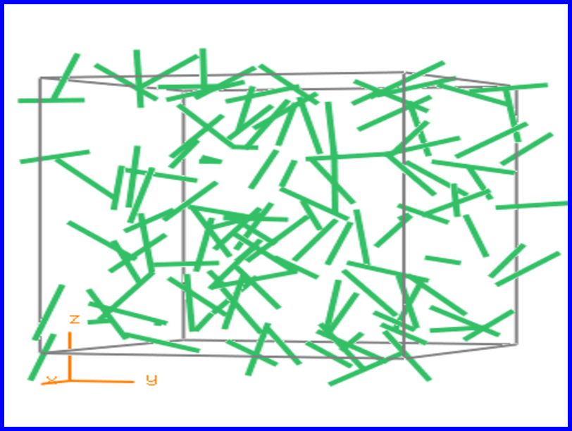 |
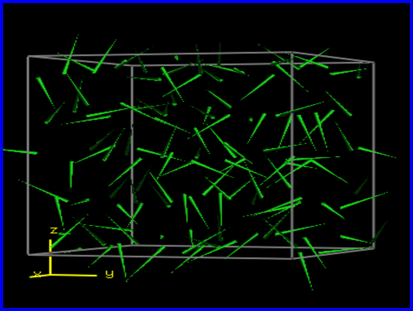 |
| Nematic Phase |
Smectic Phase |
Then there is another change of phase at around = 1.8, where it changed to a different type of Smectic Liquid Crystal:
| 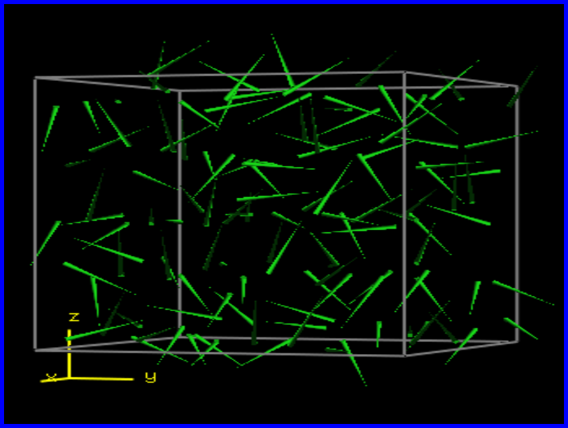 |
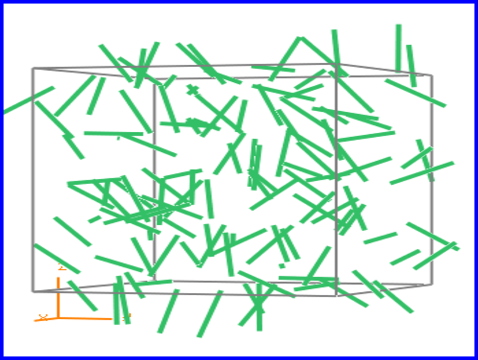 |
| Smectic A Phase |
Smectic B Phase |
Afterwards there is a fast quench at around = 0.8:
 |
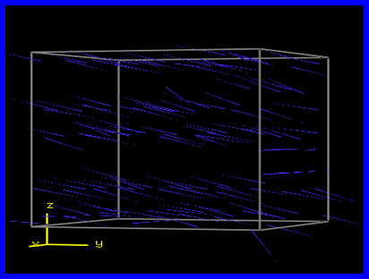 |
| Smectic C Phase |
Almost Solid State |
You can read more about phase changes in Liquid Crystals in our explanation page
The full statistics with the charts and animations can be found here.
More explanations on how to use the statistics can be found in the manual page.
Information on how to configure AViz to show the images for this simulation can be found here